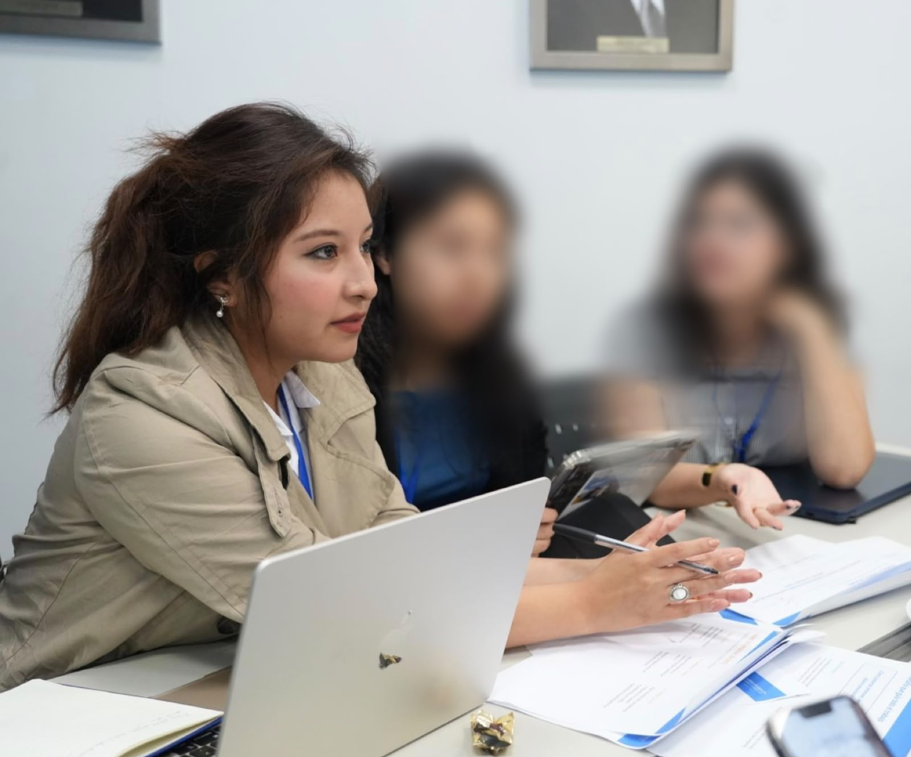

CONSULTING · ECONOMICS · RESEARCH
Guadalupe Acra
Economics undergraduate at Universidad del Pacífico, Lima, Peru
I aspire to build a career in consulting, combining analytical thinking and creativity to structure complex problems and develop practical solutions. My interests also include applied economic research, labour markets, informality and economic development.